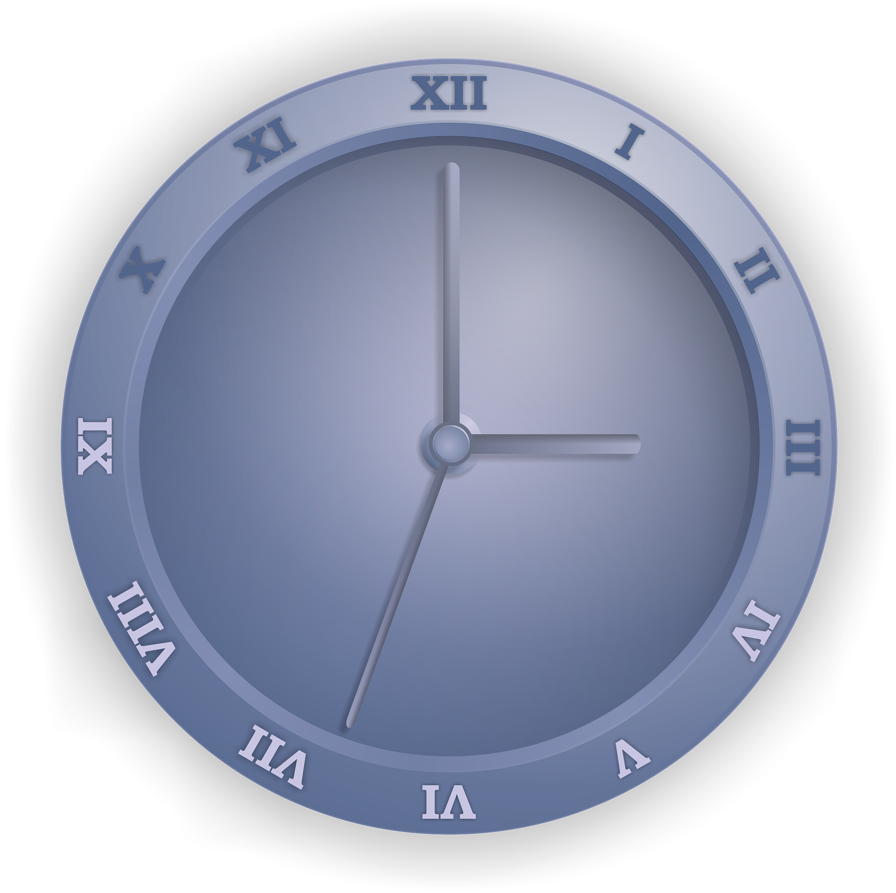

<ion-content style="--ion-background-color: #3b7e88">
  <div class="image">
    
  </div>
  <div class="text">
    <p><span style="color: #f6b844;">Find</span> <span> weather forecast for your city.</span> Easy steps to predict the
      weather and make your
      day easier.</p>
    <ion-button [routerLink]="['/home']">
      Get Started
    </ion-button>
  </div>
</ion-content>
